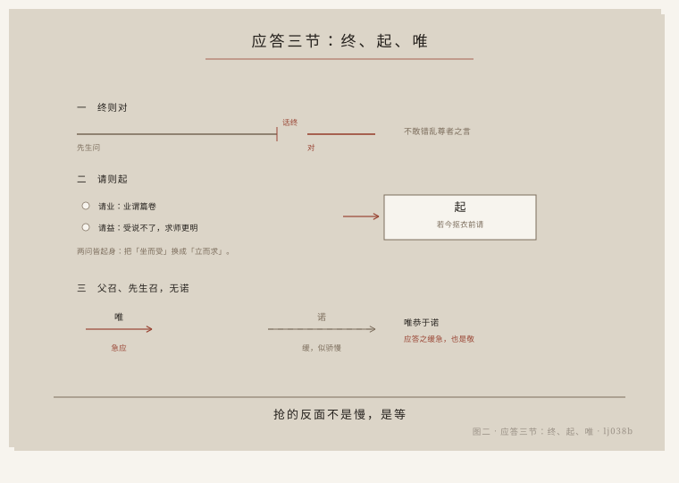

曲礼上 · 一·四十 · 第 38 课
这一节讲应答与起身：先生发问，等他说完再答；请教篇章要起身，请再讲一遍要起身；父亲召唤不「诺」，先生召唤不「诺」，应一声「唯」就起身。
说什么事：侍坐于先生，先生问焉，终则对；请业则起，请益则起；父召无诺，先生召无诺，唯而起。
落在哪一层：教。上节定「说什么」，这节定「什么时候说、说着怎么起身」。
为何编在此位：言有据，然后有节；节在「终」与「起」两个动作上。
【经】侍坐於先生，先生問焉，終則對。請業則起，請益則起。父召無「諾」，先生召無「諾」，「唯」而起。
终则对 郑注：「不敢错乱尊者之言。」——等话说完。
请业 郑注：「业谓篇卷也。」疏：「尊师重道也。起，若今抠衣前请也。」
请益 郑注：「益谓受说不了，欲师更明说之。」疏引子路问政，孔子答「先之，劳之」，子路「请益」，孔子曰「无倦」。
无诺 郑注：「应辞，唯恭于诺。」疏：「父与先生呼召称唯……其称诺，则似宽缓骄慢。」
唯而起 疏：「今人称诺，犹古之称唯，则其意急也。」——唯是急应，诺是缓应。
侍坐于先生，先生发问，等他说完再答。请教篇章要起身，请求再讲要起身。父亲召唤不答「诺」，先生召唤不答「诺」，应一声「唯」就起身。
三事都在「不抢」：不抢话（终则对）、不抢坐（请则起）、不抢应（唯而起）。抢的反面不是慢，是「等」。
第一层 「终则对」：答在问完之后 郑注「不敢错乱尊者之言」——不是不敢答，是不敢在人家话没说完时答。抢答之失，在于把尊者的句子截断。
第二层 请业请益则起：问要站起来问 郑注分别「业」与「益」：业是篇卷（问哪一篇），益是「受说不了」（没听懂，请再讲）。疏举子路问政请益，孔子答「无倦」——请益不是求多，是求明。
第三层 「起，若今抠衣前请」 郑以汉时受学之礼作比：提起衣裳上前请。起身不是礼貌姿态，是把身体从「坐而受」换成「立而求」。
第四层 唯与诺：一字之缓急 郑注「唯恭于诺」，疏说得透：「唯」意急，「诺」意缓；称诺于父与师，便「似宽缓骄慢」。今日只剩一个「好」，缓急已失；此节提醒：应答的速度也是敬。
与今日何干 今日课堂与会议，抢答、坐着提问、随口「嗯」「好」，三样都犯。此节只改三个动作：听完、起身、应快。
| 左 | 右 |
|---|---|
| 先生问焉，终则对 | 不敢错乱尊者之言 |
| 请业则起 | 业谓篇卷；起若抠衣前请 |
| 请益则起 | 益谓受说不了，欲师更明 |
| 父召无诺，先生召无诺 | 应辞，唯恭于诺 |
| 唯而起 | 唯意急，诺意缓 |
画一堂上两席：前席坐痕深而居中，后席坐痕浅且已离开席面半步，席边有一双并拢的鞋印立起。两席之间地上摊着一卷简，简端朝着后席。不画人，不写文字。赭色只在卷轴两端与席缘。
